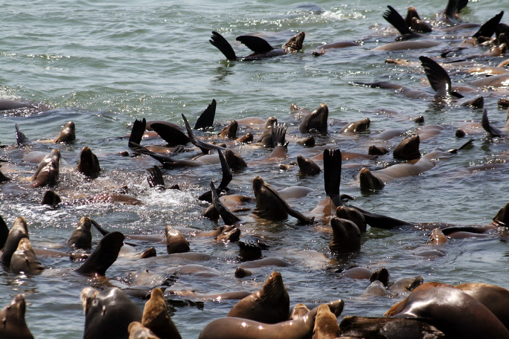

|  |
| 成群的海獅圖片出處：“Zalophus californianus at Moss Landing 3” by Brocken Inaglory - Own work. Licensed under CC BY-SA 3.0 via Wikimedia Commons |
{kind=link}
海 獅其實是這樣進入後宮甄環傳裡的。一天晚上，我和母親大人在電視前面觀看公視的生態節目。生態節目裡正好介紹年輕的公海獅，覬覦岸上成群的母海獅，伺機想找機會交配。無奈這群龐大的母海獅們，數量可能超過數十隻，都屬於一隻（沒錯！是一隻！）成年的公海獅。為了不想被成年公海獅海扁一頓，沒實力的年輕海獅，只好在海灘外的淺海域徘徊，希望逮到成年公海獅失神的時刻，偷偷和其中一隻母海獅交配成功。
我看著生態節目的介紹，突然幽幽的跟母親大人交換心得：“怎麼覺得成年公海獅有點像甄環傳裡清朝的皇帝？”坐擁佳麗三千人的中國皇帝，多像海獅社會裡的成年海獅，為了保證自己的優勢基因能夠傳遞到下一代去，而佔據了成群的母海獅。
因為對人類和海獅發展出類似的婚姻制度，就開始思考這樣的婚姻制度是否在演化上具有某種程度的優勢，而讓海獅們行之有年。結果意外地在賈德戴蒙的第三類猩猩一書中，找到了一個章節關於人類在性行為和婚姻制度演化上的討論。在基因上與人最相近的就是黑猩猩，基因相似程度高達 98%。可是在“婚姻制度”（註）的演化上，卻是完全不同的方向。黑猩猩的社會中，雌性的地位不僅低落，而且亂性的程度，可說是母猩猩自己也搞不清楚孩子的爹是誰。反觀之，和人類演化關係比較疏遠的長臂猿猴，則是長相廝守的一夫一妻制。人類的社會，整體而言，似乎是夾在這兩種選擇之間。
人類在性行為的演化上有兩點是相當獨特的：一是隱性排卵或發情，二是私密的交媾行為。雌黑猩猩發情時，臀部會發紅腫脹，所以整個黑猩猩社群的男性們，就會像光顧免付費妓院一般排隊公開和發情的雌猩猩交配，人類卻缺乏這樣顯著的性徵。研究人類演化的科學家們於是就相互爭鬧不休，結果因為科學家是屬於女性主義或是大男人主義，又可形成六種假說來解釋這兩種演化結果。
身為大男人的科學家說，試想辦公室裡如果因為一位女性發情，而讓同辦公室的男性們為了得到發情女性的青睞，爭鬧不休，這樣豈不是降低了工作效率。尤其一開始以狩獵和採集維生的早期智人，更需要團體合作，所以隱性發情就這樣發展出來啦！
另外一個沙文科學家則說：不不不，你沒看到黑猩猩們都很有秩序的排隊嗎！其實隱性發情和公開性行為是為了婚姻的幸福美滿，而女性演化出提供穩定的性生活給男性，又可以養育他的子孫的結果。
還有一個自以為是男女平等的擁護者的男性科學家則延伸他的觀察：君不見，黑猩猩社會中，發情的女性比較容易分到男性得到的獵物嗎？所以，女性是為了自身的利益，演化出這兩種結果，讓男性搞不清楚女性什麼時候才真正發情，女性也因而獲得長期飯票的保證。
這個時候，真正將男女平等考慮在內的一男一女科學家搭檔提出另一種理論：男人因為為了確保女性肚子裡的孩子是自己的，又擔心不知道什麼時候會發情的女性在他不在的時候捻花惹草，所以只好和女性長廂廝守，這其實是女性為了拴住老公所演化出來的策略。（呃，這是哪門子的男女平等呀！）
偏向於族群選擇的女性主義科學家， 則說：其實，當不同族群互相鬥爭時，勝利的族群通常會將失敗的族群中的男性趕盡殺絕，而將女性留下，好繁衍自己的子孫。但是因為搞不清楚，女人肚子裡的孩子到底是誰的，所以失利族群的女性，反而還能讓自己原本族群裡的基因繼續繁衍。
最後跟我一樣受不了的女性科學家終於說話了：人類女性生產的過程比其他動物都危險痛苦，所以隱性排卵和私密性交，是女性逐漸瞭解性交和生育的關係後，為了避免過度性交，造成冒著生命危險產下無法撫養的後代以及保護自身與兒女免於遭到始亂終棄的危險，而演化出自己也搞不清楚什麼時候排卵的自我欺騙策略。
其實關於婚姻制度的演化，在動物的世界中是趨向若雄性和雌性的身形比例相差較懸殊，生物會比較傾向一夫多妻制，如海豹和…呃…權利比較大的中國皇帝。反之，若身形比例不會相差懸殊，則會傾向一夫一妻制，如鳥類。因為有礙於本部落格沒有只限成人內容尺度關係（至少我 blogger 的後台是勾選沒有…），所以詳細內容包括性器官與婚姻制度演化上的關係，請看第三類猩猩一書。（狂推這本書呀！）
另外在道金斯在自私的基因一書，也闡明人類婚姻制度的演化其實是基因與文化互動的結果。道金斯的理論比較偏向將個體利益的出發點定義以最小單位為主，也就是基因。在演化中，所有的基因都努力想要增加自己的子代數量，但天擇還是作用在以多基因為組合的表徵上，並不是以單一基因為天擇的單位。而所謂的“男女不平等”，在演化有性生殖，出現卵子和精子時，就已經開始。
簡單的說，雌性在繁殖和養育上永遠是付出成本比較多的個體。但，自私的基因一書也指出，根據博奕理論，社會中男女比例 1:1 其實是達到演化平衡的最佳比例。也就是說，為了能保證自己未來的子孫能被妥善照顧，女性其實也在性擇上演化出選擇誠實配偶的行為。所以，以下純粹是自己胡思亂想：複製羊的科技，變性手術跟同性戀其實也是反男女不平等的潛性演化（meme / 彌）嗎？！
其實，奉行一夫多妻制的中國古代社會，似乎也是海獅小社會的翻版。在妻妾成群的後宮或大宅裡，妻妾卻明爭暗鬥的鞏固自己的地位。這樣的情況，在書籍和電影裡也多有描繪，妻妾為了讓自己的孩子成為權力的接替者，而使盡了狠毒把戲。史記裡的呂后如何殘忍的對待戚夫人，電影大紅燈籠高高掛裡，身為新寵的鞏利如何耍弄小聰明，假裝懷孕來重新得寵，更別說近年來紅透半邊天的後宮甄環傳，更是寫盡了女人們費盡心思，讓懷孕的敵手流產，只是為了能讓自己的小孩成為權力的接班人。
然而，把一夫多妻制合法化的古代中國，卻也比不上英國都鐸王朝的亨利八世，全英國已經遍佈了他的私生子，還是為了能有一位合法的子嗣，娶了五位老婆不說，這五位老婆命運好的是離婚，命運較差的則是被斬首。所以，在女人們為了自己的孩子而爭鬧不休時，是不是真的能有助於子代的繁衍，在人類的社會裡，似乎是不言而明的答案了。
不管是一夫多妻或是一夫一妻制，現代的社會已經不再把女性視為傳宗接代的工具。面對需要雙薪才能維持一個家庭開銷的現代社會，女性絕對有權利和能力去夢想和追求一如男性在社會工作打拼奮鬥，成為家中經濟的支柱，再也無需藉由以子為貴來鞏固自己在家族中的地位。
很久以前，臺灣社會對某台大資工系的女高材生進入演藝圈有不同聲音的評論。坦白來說，我覺得個人的職業和志向都是個人的選擇，結果如何都是個人要去承擔，他人只能從旁建議，其實無法多言。但是，身為亙古以來遭到剝削和屬於弱勢的女性，我不得不大聲疾呼，就算妳想要成為身體被剝削，用容貌和青春去賺錢，為了其他不想這麼做的女性著想，即使是身為在資訊展穿得少少的 Show Girl，妳也要立志成為比拿著大砲對著妳的宅男更懂 3C 產品的比基尼辣妹呀！！
[註] 這裡的婚姻制度，當然不是指動物們到法院去證婚，而得到眾人祝福後，成為同甘共苦的夫妻。而是廣義的指動物一生中，是否有共同撫養子代的單一配偶而論。